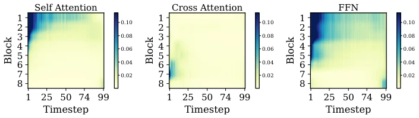
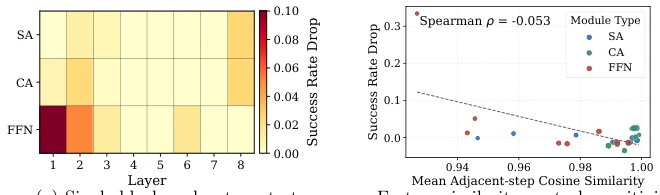
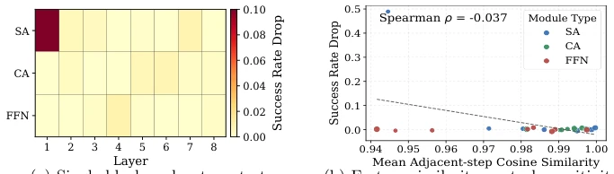
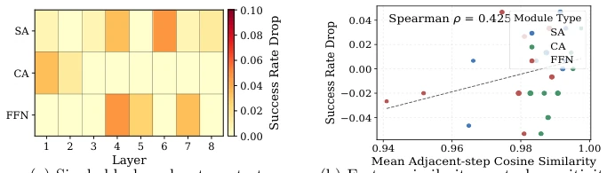
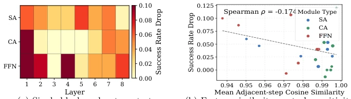
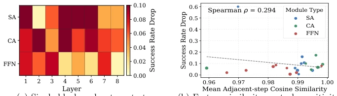
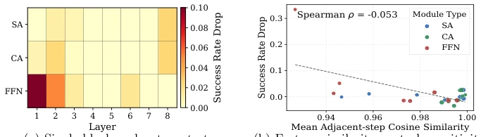
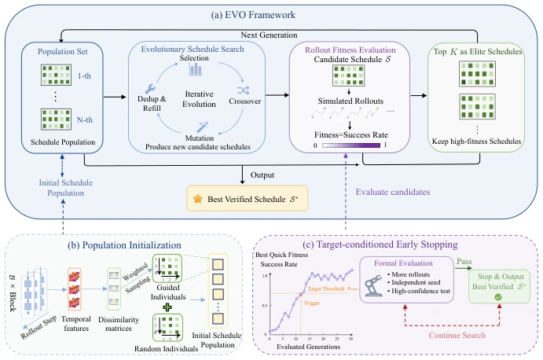
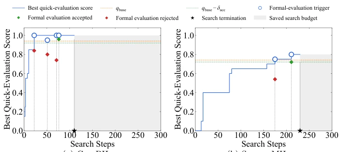

This paper adds another spark to the inference acceleration of Diffusion Policy, but this time it does not rely on distillation or reducing sampling steps, but instead adopts an "evolutionary" approach. The EVO framework globally schedules cache refreshes on block-time grids through evolutionary search, which sounds quite appealing, given it claims to save 8x compute. However, upon careful thought, this is essentially an offline optimization problem. Although the search cost is reduced by the early stopping mechanism, simulation must still be run before deployment. For scenarios with extremely high real-time requirements, is this "compute first, run later" strategy worth it? Additionally, it relies on rollout as fitness, which is direct but computationally expensive, fortunately managed with redundancy-aware initialization. Overall, this is a smart approach that trades compute for power under a training-free premise, but do not expect it to create something from nothing like magic, after all, no matter how much the cache strategy evolves, the Transformer's FLOPs are there, and offline search costs may become a bottleneck on complex tasks.
Diffusion Policy has become prevalent in the robotics field due to its powerful visual-motor control capabilities, but the iterative denoising process leads to high inference latency, making it difficult to meet real-time control requirements [3]. Existing cache acceleration methods such as EfficientVLA [30] and BAC [9] can reuse intermediate activations but have obvious flaws. EfficientVLA adopts fixed time interval refreshes, while BAC, although adaptive to blocks, still limits the budget per block. They ignore the temporal redundancy heterogeneity between different Transformer blocks. As shown in Figure 1, the feature difference distribution between denoising steps varies unevenly across different modules, and uniform allocation of compute budget leads to suboptimal trade-offs between performance and efficiency. Therefore, there is an urgent need for a scheduling strategy that globally perceives block-time grid redundancy distribution, rather than being limited to local or fixed rules, to maximize compute savings while maintaining performance.

Fig. 1. Cross-step feature dissimilarity of transformer modules on Push-T. Higher dissimilarity indicates larger feature variation between denoising steps and therefore weaker temporal redundancy. The heatmaps show that different blocks exhibit distinct temporal distributions of high-dissimilarity regions as well as different overall dissim- ilarity levels, revealing heterogeneous redundancy patterns and degrees across blocks. FFN denotes the feed-forward network.

Fig. 3. Motivation for rollout-driven global cache scheduling. (a) Under the same sparse update pattern, different transformer blocks cause different success drops, indicating non-uniform task sensitivity across layers and module types. (b) The weak correlation between adjacent-step feature similarity and success drop suggests that feature simi- larity is useful as a prior but insufficient as the final scheduling objective.

Fig. 1: Additional motivation analysis on Kitchen.

Fig. 2: Additional motivation analysis on Square MH.

Fig. 3: Additional motivation analysis on Tool PH.

Fig. 4: Additional motivation analysis on Transport MH.

Fig. 5: Additional motivation analysis on Push-T.
方法Method
EVO 是一个训练-free 的加速框架，核心是将缓存调度建模为块 - 时间格点上的子集选择问题。整体流程分为离线搜索和在线部署两阶段。离线阶段，进化算法在固定预算 K 下搜索最优刷新位置集合 S。每个候选个体代表一个完整调度，通过闭环 rollout 的成功率作为适应度函数。进化过程包含锦标赛选择、集合级交叉、变异和精英保留。为降低搜索成本，引入两个机制：一是冗余感知初始化，利用激活不相似度作为软先验，引导初始种群偏向低冗余位置，同时保留随机个体以维持多样性；二是目标条件早停，当候选方案通过快速评估达到目标阈值后，进行正式验证，达标即终止。在线阶段，加载最优调度 S*，在推理时根据位置是否属于 S 决定刷新缓存或复用。该方法不修改策略参数或采样器，仅改变计算执行路径，确保即插即用。
EVO is a training-free acceleration framework, the core of which models cache scheduling as a subset selection problem on block-time grids. The overall process is divided into two stages: offline search and online deployment. In the offline stage, the evolutionary algorithm searches for the optimal refresh position set S under a fixed budget K. Each candidate individual represents a complete schedule, with the success rate of closed-loop rollout used as the fitness function. The evolutionary process includes tournament selection, set-level crossover, mutation, and elitism. To reduce search costs, two mechanisms are introduced: first, redundancy-aware initialization, using activation dissimilarity as a soft prior to guide the initial population towards low-redundancy positions, while retaining random individuals to maintain diversity; second, target-condition early stopping, where when a candidate scheme reaches the target threshold through quick evaluation, formal verification is conducted, and termination occurs upon meeting the standard. In the online stage, the optimal schedule S* is loaded, and during inference, it decides to refresh cache or reuse based on whether the position belongs to S. This method does not modify policy parameters or samplers, only changes the compute execution path, ensuring plug-and-play.

Fig. 2. Framework of EVO, a training-free acceleration framework for global cache scheduling via evolutionary search. (a) EVO searches for a globally budgeted cache schedule, using rollout fitness as the selection criterion. (b) Redundancy-aware and random individuals are combined to initialize the schedule population. (c) Target- conditioned early stopping performs formal verification for promising schedules and terminates once the desired performance target is reached.

Fig. 6: Search trajectories under target-conditioned early stopping on represen- tative tasks. EVO terminates the search once a candidate schedule passes formal evaluation, while a rejected formal evaluation allows the search to continue.
Experiments are conducted on benchmarks such as RoboMimic, Push-T, Block Push, and Kitchen, using pretrained DP-T models. Baselines include Full Precision, EfficientVLA, and BAC. Evaluation metrics are success rate, FLOPs, and acceleration ratio. Results show that EVO achieves up to 8.05x acceleration, reducing FLOPs from 15.77G to 1.96G, while maintaining near-full model success rates (e.g., PH task 0.78 vs 0.80). Ablation studies show that global block-step scheduling is more effective than block-level scheduling (success rate 0.91 vs 0.87), and redundancy-aware initialization further improves search efficiency and final performance. Compared to EfficientVLA's performance collapse on complex tasks such as Transport and Tool, EVO demonstrates a better trade-off, proving the advantage of global search in allocating cache budgets.